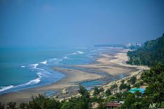
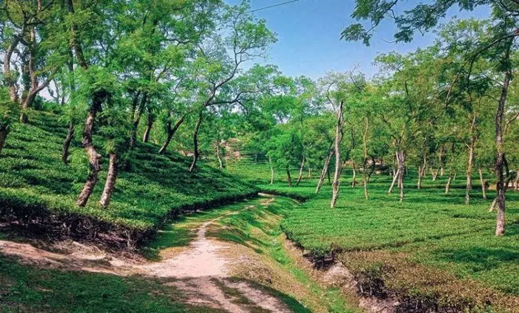
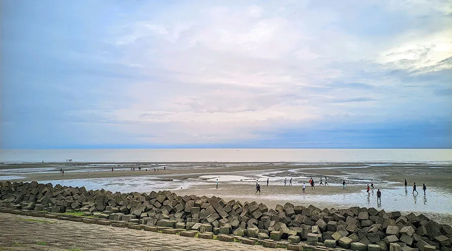
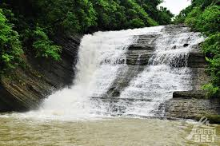

Traveling opens the door to new experiences, and I’ve been fortunate to explore some beautiful places. Each destination offered something unique and memorable.
Banshkhali Beach is a peaceful and beautiful spot located in Banshkhali, Chattogram. It is very close to my home, so I often visit it. The beach is calm and not too crowded, which makes it perfect for relaxing. I love going there in the evening to watch the sunset. The view of the sun setting over the sea is truly amazing. The sound of the waves and the cool breeze always make me feel refreshed. Sometimes I go there with friends, and we enjoy tea from the nearby stalls. Children play near the shore and collect small seashells. Every visit to the beach gives me a peaceful feeling and happy memories. Banshkhali Beach is a special place that I truly enjoy and feel connected to.
The Banshkhali Tea Garden is one of the most beautiful places in Banshkhali, Chattogram. It is located just 6 kilometers away from my house, which makes it easy for me to go there often. The peaceful surroundings and endless rows of tea plants create a calm and refreshing atmosphere. I usually visit the garden in the early morning when the air is cool and fresh. The green hills and neat lines of tea bushes look stunning from every angle. Birds chirping and the gentle wind through the leaves make the place feel even more relaxing. Sometimes I enjoy quiet walks there alone, and other times I go with friends to explore the area. The workers picking tea leaves with baskets create a traditional and beautiful scene. I always feel refreshed and peaceful after spending time there. The Banshkhali Tea Garden has become one of my favorite spots for nature and relaxation.
Akilpur Beach is a hidden treasure located near my hometown. Unlike busy beaches, it offers a quiet and soothing environment. The soft sand and gentle waves make it an ideal place to unwind. I often visit Akilpur Beach to enjoy peaceful walks along the shore and listen to the calming sound of the ocean. The natural beauty here feels untouched and pure, making every visit refreshing0
Komoldoho Ruposhi Jorna is a stunning waterfall nestled in a lush green forest. The cascading water creates a cool mist that refreshes everyone nearby. I love spending time there because the fresh air and the sound of flowing water are incredibly relaxing. Surrounded by trees and nature, Ruposhi Jorna feels like a perfect escape from the busy world.
Cox’s Bazar is famous worldwide for its long, sandy beach that stretches for miles. It’s a vibrant place filled with visitors from all over, enjoying the sun and sea. The bustling market, delicious seafood, and lively atmosphere make Cox’s Bazar a must-visit destination. Every trip here is full of excitement and unforgettable experiences by the vast ocean